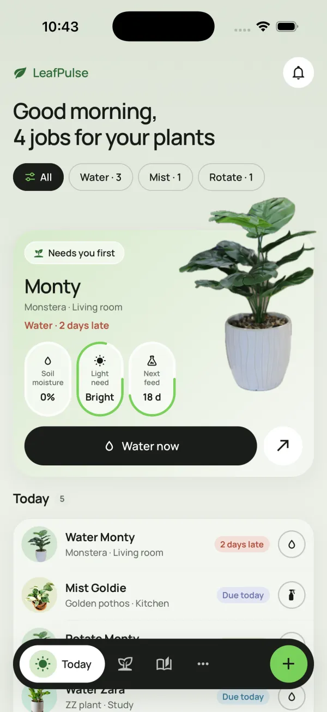
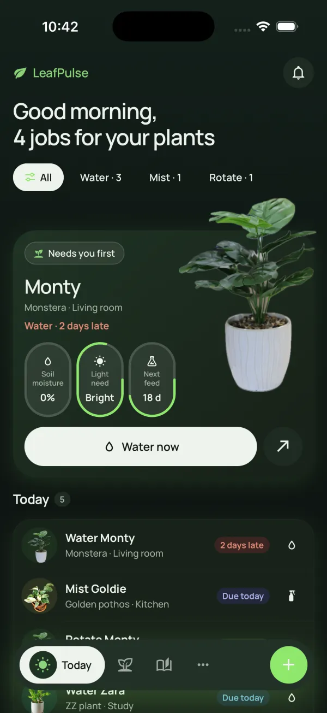
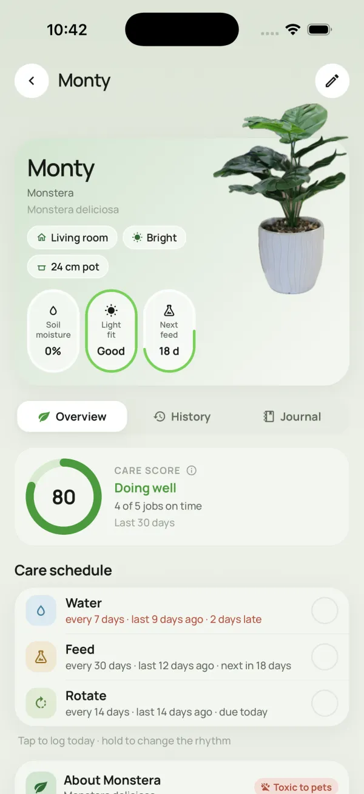
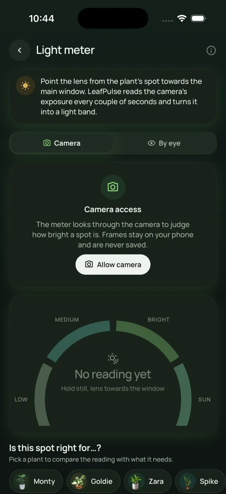
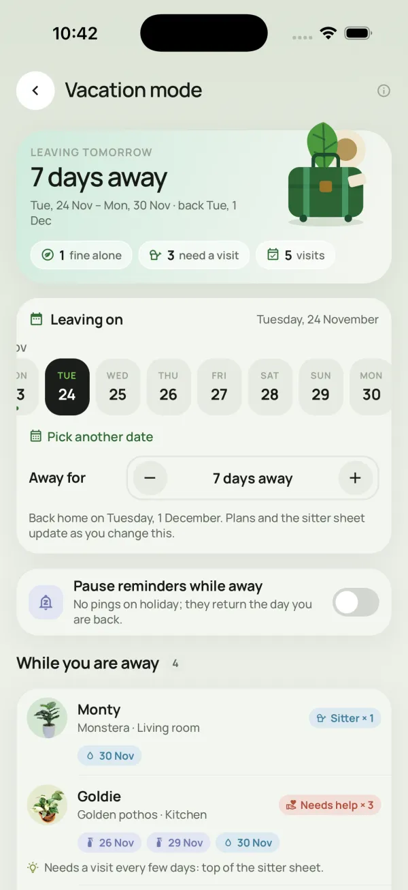
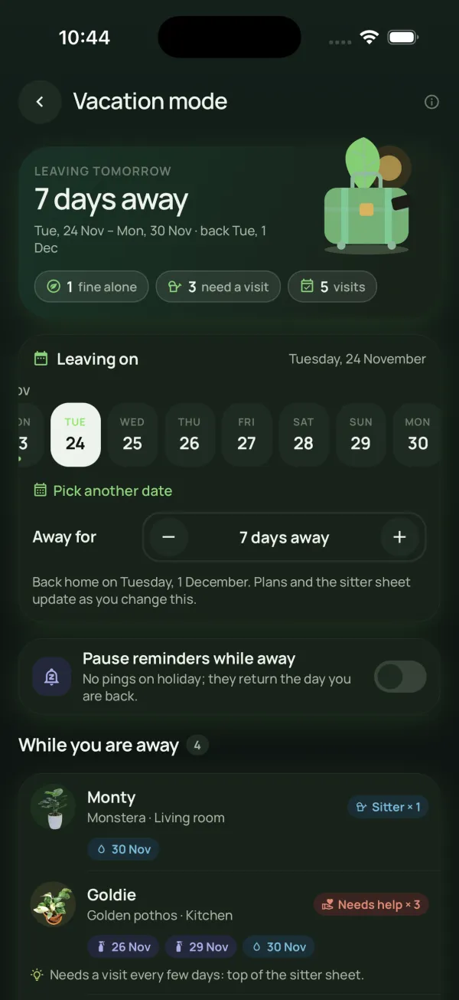

Today, at a glance.
Add your plants once, and every morning one screen shows who needs you.
- Water, feed, mist and rotate jobs across all your plants, overdue first
- Done in one tap, with progress for the day and undo for every job
- One gentle reminder a day at the hour you choose, never a pile of alerts

The next few days, too.
Nothing sneaks up on you: the Upcoming screen lines up what each plant needs next.
- Care for the coming days, plant by plant
- Change any plant's rhythm later from its profile


A profile for every plant.
Group plants by room, each with its own colour and care schedule.
- Soil-moisture, light and feeding gauges, care history and a care score
- A built-in catalogue of 650 plants fills in the care defaults
- A "toxic to cats and dogs" badge on every catalogue plant
- A journal with photos, notes and heights, then-and-now photos and a share card


Help when a leaf looks wrong.
Short reads for the common worries, and a doctor that works without the internet.
- 16 short care guides: watering, light, repotting, yellow leaves, brown tips, pests, winter and summer care
- Leaf doctor: describe the leaf, answer two or three questions, and get the likely cause and a fix
- Worked out on your phone, no internet needed


Is this spot bright enough?
Hold the phone where a plant sits and see if the spot is low, medium, bright or direct sun.
- Reads the light through your camera
- Shows which plants will be happy there


Go away without the guilt.
Plan care before a trip, then share or print a one-page sitter sheet.
- Pick your dates and see who needs a visit while you're away
- Pause reminders while you're away
- Share or print the sitter sheet for whoever looks after them
Little touches that add up.
Weather-smart watering Premium
Heat waves bring watering forward, cold snaps push it back, and you see why.
Identify by photo Premium
Snap a plant and get its care defaults ready, powered by Pl@ntNet.
Room by room
Plants grouped by room, each room with its own colour.
Backup your way
Export and import a backup whenever you like.
Light and dark
A calm light theme and a night garden for evenings.
Stats off in one tap
Usage statistics are anonymous and easy to turn off.
Your plants will notice.
LeafPulse is coming to the App Store and Google Play. Questions in the meantime? Write to us.